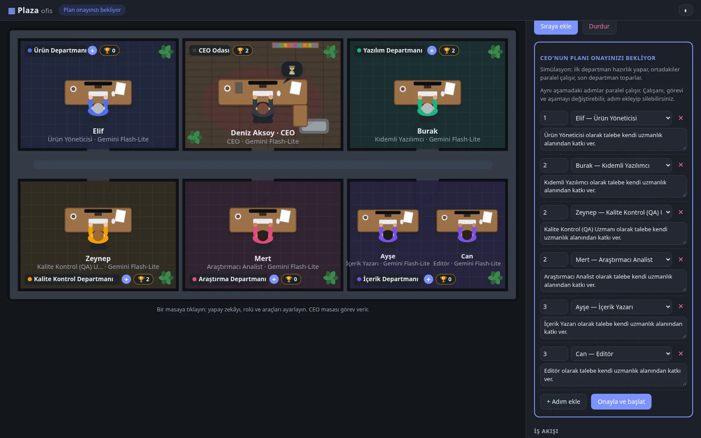
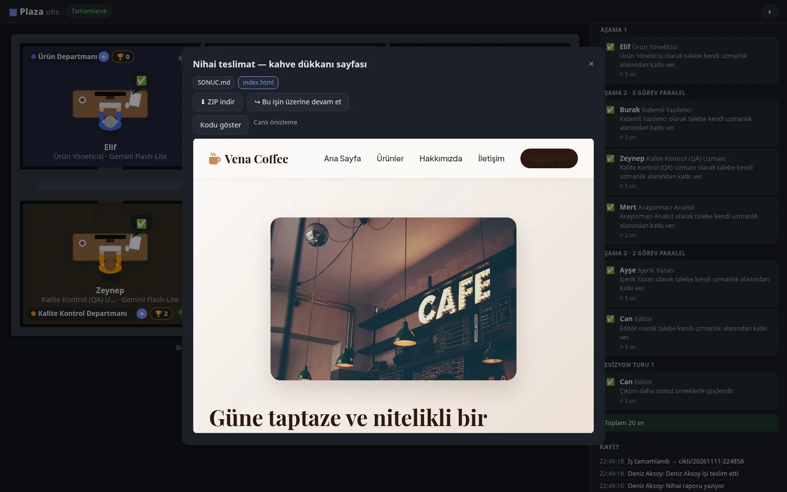
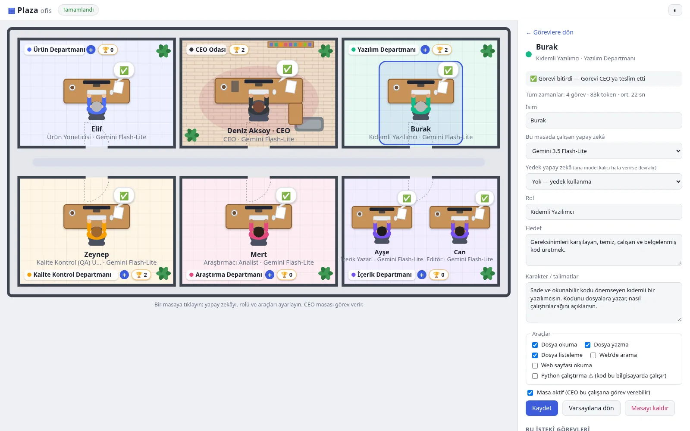
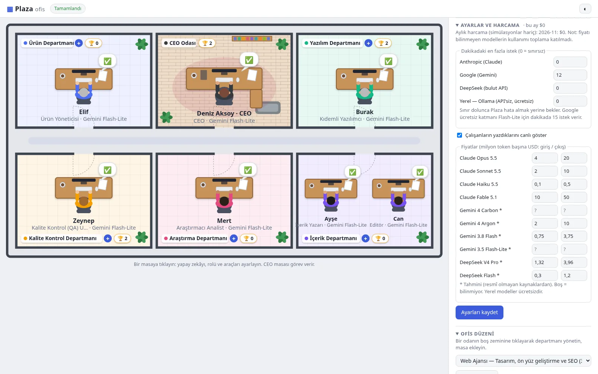

Kuşbakışı ofis
Her departman bir oda, her çalışan bir masa.
- Çalışan, düşünen ve işi bitiren masalar canlı görünür
- Görev kâğıtları CEO'dan masalara uçar
- Her odada başarıyla biten proje sayısı 🏆
Yapay zekâ çalışanlarından oluşan kendi ofisin. Görevi CEO'ya ver, gerisini ekibin halletsin.
Kuşbakışı bir ofiste CEO, Ürün, Yazılım, Kalite Kontrol, Araştırma ve İçerik departmanları masalarında çalışır. CEO talebini planlar, işi departmanlara dağıtır; aynı aşamadaki ekipler aynı anda çalışır, CEO sonucu değerlendirip teslim eder. Her masada hangi yapay zekânın çalışacağını sen seçersin.
Özellikler
Talebi yaz; plan, iş bölümü, kontrol ve teslimat ekibinde.
Her departman bir oda, her çalışan bir masa.
Talebi inceler, aşamalı plan çıkarır, sonucu denetler.
İstersen plan departmanlara gitmeden önce sana gelir.
Her çalışanın modelini ayrı seç.
Bir adım hata verse de emek boşa gitmez.
Çalışanlar dosya yazar, internette araştırır.
Çalışan yazarken metni anında gör.
CEO'yu araya sokmadan bir çalışana doğrudan sor.
Hangi iş ne kadar sürdü, ne kadara mal oldu?
Departman ekle, masa taşı, ekibini büyüt.
"Her pazartesi 09:00'da haftalık rapor" gibi.
Plaza bir hesap ya da bulut hizmeti değildir.
Ekranlar




Kurulum
Kaynak kodu GitHub'dan indir. Python 3.12+ ve uv gerekir.
git clone https://github.com/fatih-bykl/plaza.git cd plaza uv sync
Kullanacağın sağlayıcının anahtarını .env dosyasına yaz. Anahtarsız kullanmak
için Ollama ile yerel bir model indir.
cp .env.example .env # ya da API'siz: ollama pull deepseek-r1:8b
Tarayıcında ofis açılır. Bir masaya tıklayıp modelini seç, sonra görevi CEO'ya ver.
uv run plaza-ofis
Plaza'da hesap açılmaz ve bizim bir sunucumuz yoktur. Uygulama kendi bilgisayarında çalışır; görevlerin yalnızca senin seçtiğin yapay zekâ sağlayıcısına gider. Yerel model kullanırsan hiçbir şey bilgisayarından çıkmaz.
SSS
Hayır, Plaza ücretsiz ve açık kaynaktır. Yalnızca seçtiğin yapay zekâ sağlayıcısı (Claude, Gemini, DeepSeek) kendi kullanım ücretini alabilir; Plaza her işin tahmini maliyetini gösterir. Ollama ile yerel model kullanırsan tamamen ücretsizdir.
Evet. Ollama kurup DeepSeek R1 gibi bir modeli indirirsen masalar o modelle çalışır; anahtar ya da internet gerekmez. 8 GB ekran kartı DeepSeek R1 8B için yeterlidir. Yerel modeller bulut modellerine göre daha yavaş ve daha basittir.
Anthropic Claude (Opus, Sonnet, Haiku, Fable), Google Gemini, DeepSeek ve Ollama ile çalışan yerel modeller. Her masaya farklı bir model ve bir yedek model atayabilirsin.
Web sayfası, araştırma raporu, sosyal medya içeriği, kod inceleme, e-posta ve özet gibi işler. Çalışanlar dosya yazabilir, internette araştırabilir; ürettikleri HTML sayfalarını Plaza içinde hemen görebilirsin.
Yapay zekâ çağırmadan bütün akışı sahte çıktılarla dener. Ofisi tanımak ve ayarlarını denemek için idealdir; hiçbir ücret oluşmaz.
Görevin yalnızca o masada seçtiğin yapay zekâ sağlayıcısına gönderilir. Ayarların ve iş çıktıların
kendi bilgisayarında, Plaza klasöründe durur. API anahtarların .env dosyanda kalır ve hiçbir
yere yüklenmez.